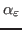
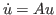
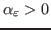
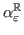

Next: About this document ...
Minghao W. Rostami
Lyapunov inverse iteration for computing pseudospectral abscissa
Department of Mathematical Sciences
Stratton Hall
100 Institute Road
Worcester
MA 01609-2280
mwu@wpi.edu
 -pseudospectral abscissa
-pseudospectral abscissa

refers to the
maximum real part of points in the
-pseudospectrum of a
matrix  . It is a robust measure of the stability of the linear
dynamical system
. It is a robust measure of the stability of the linear
dynamical system

. If

, the steady
state of this system can be unstable (i.e., sensitive to small
perturbations) in reality even if all the eigenvalues of
have
negative real parts.
In [SIAM J. Matrix Anal. Appl, Vol. 32, No. 4, pp. 1166-1192], an
algorithm for computing
for large, sparse matrices
was proposed, which requires computing the rightmost eigenvalues for a
sequence of (complex) matrices.
Finding the rightmost eigenvalues for large, sparse and nonsymmetric
matrices is known to be challenging. In this talk, we first present a
modified version of the above algorithm that computes the real
-pseudospectral abscissa

of
. It requires computing the rightmost eigenvalues for a sequence of
real matrices, which can be done in a robust and efficient manner by
applying a recently developed eigenvalue solver called the Lyapunov
inverse iteration [SIAM. J. Matrix Anal. Appl. Vol. 34, No. 4, pp.
1685-1707]. We then show that a good approximation of
can be obtained from
. Numerical results for
arising from
spacial discretization of incompressible Navier-Stokes equations will be
presented.
Next: About this document ...
Copper Mountain
2014-02-23